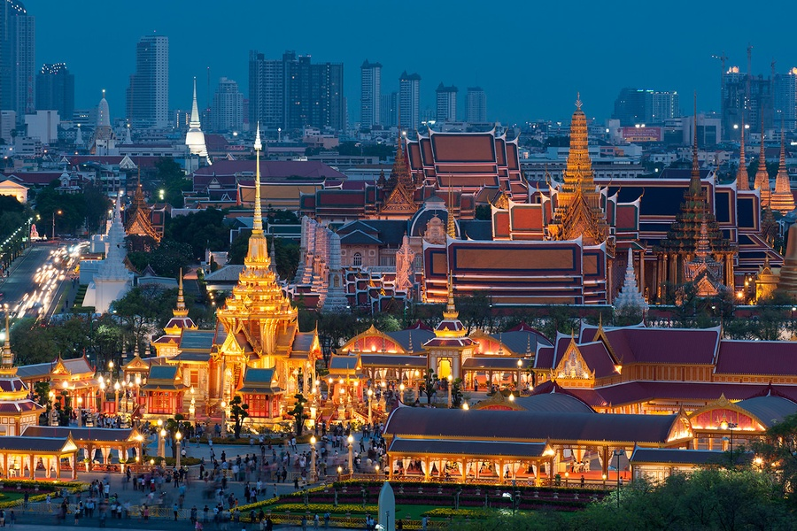
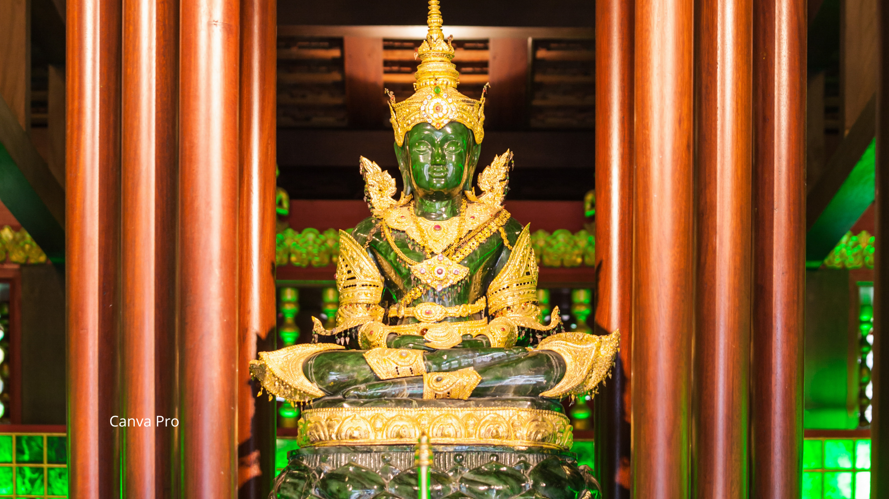

O grand Palace é um dos monumentos mais importantes e visitados da Tailândia.
Localizado na capital, o complexo foi construido em 1782 e serviu como residência oficial dos reis por 150 anos!
Dentro do complexo se encontra o WAT PHRA KAEW, também conhecido como o buda de esmeralda.
O templo Budista mais sagrado da Tailândia.
O local abriga a famosa estatua de esmeralda, uma escultura esculpida em jade verde, é considerada um ímbolo espiritual e protetor da nação.
